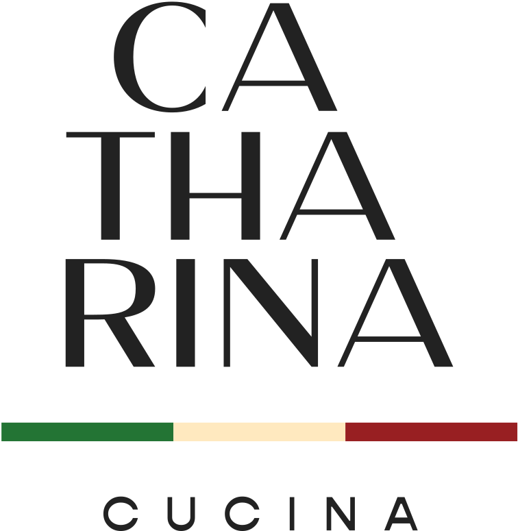
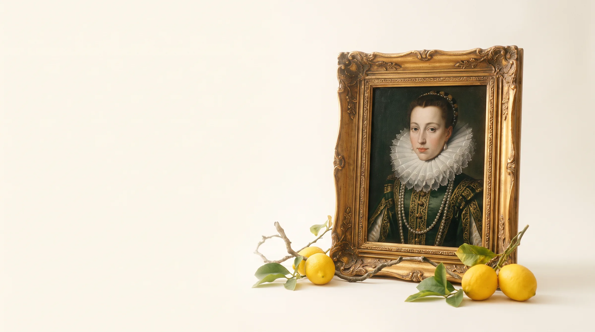
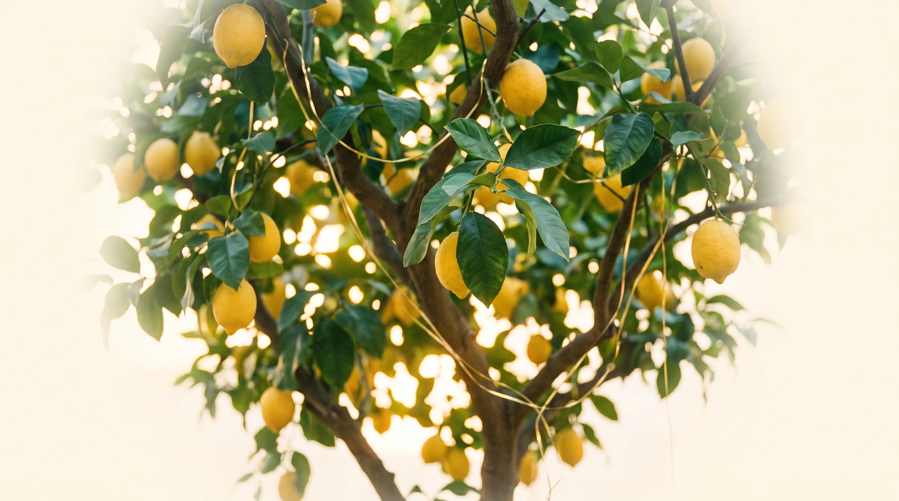
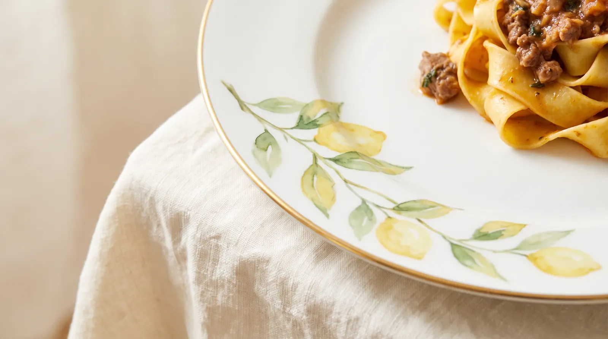
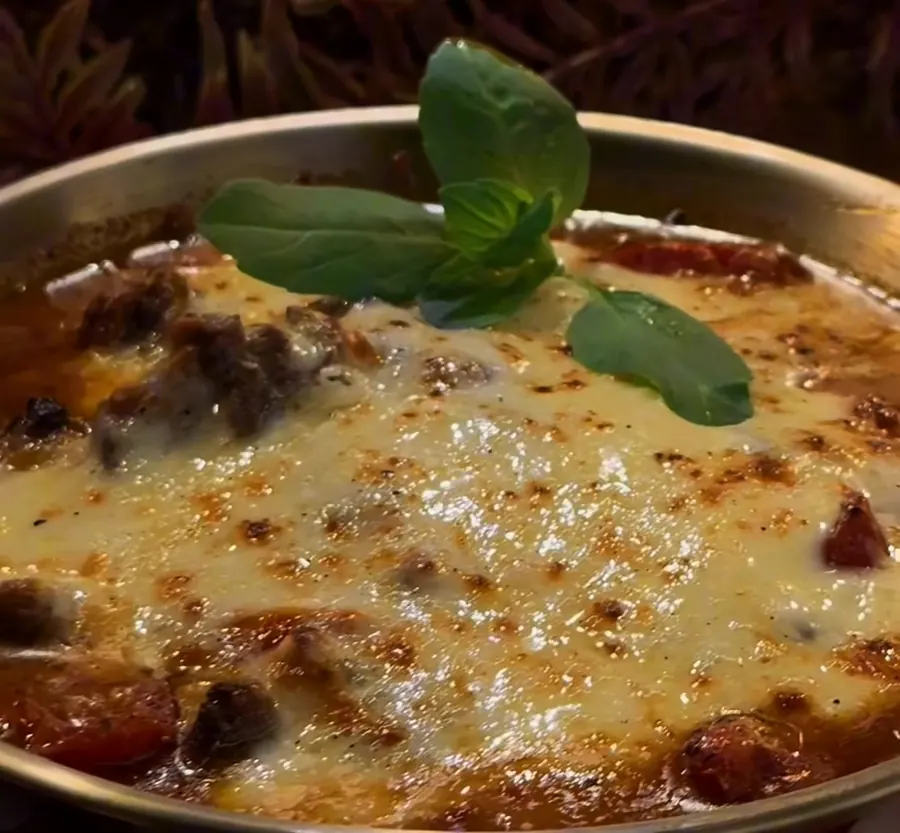
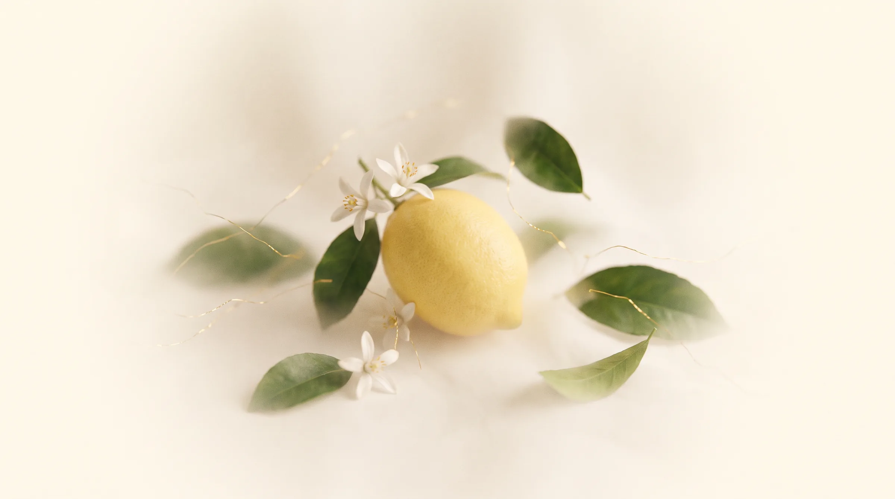

A árvore
O limoeiro ocupa o coração da casa. As mesas mais pedidas ficam embaixo da copa.

Amore per la tradizione, passione per l'innovazione.
Cozinha italiana no Centro de Guarapuava.
10º lugar entre os 30 melhores restaurantes do Paraná.
Prêmio Bom Gourmet 2026
Sua mesa sob o limoeiro.
Reservar pelo WhatsApp
O Catharina nasceu em 2019, na lua de mel de Henrique e Brunna na Itália, e abriu as portas em 30 de maio de 2024. O nome homenageia duas Catarinas: a de Médici, que no século XVI levou a cozinha italiana para a corte francesa, e a filha do casal.
Henrique Brito Losso é guarapuavano, formado em Gastronomia em Florianópolis, com mais de 17 anos de cozinha e um prêmio Veja Comer & Beber no currículo. Brunna Dalla Vecchia Losso é filha e neta de donos de restaurante e trabalha no salão desde os 13 anos. Ela cuida de tudo o que você vê, da escolha das louças ao último detalhe da mesa.

Madeira aquecida por luz âmbar, banquetas de veludo verde, música baixa. E, no centro de tudo, uma árvore carregada de limões sicilianos, que virou o lugar preferido para a foto da noite.
O limoeiro ocupa o coração da casa. As mesas mais pedidas ficam embaixo da copa.
Amore per la tradizione, passione per l'innovazione, escrito em luz sobre um jardim de folhagens secas.
O retrato da rainha em moldura dourada observa o salão, lembrando de onde vem o nome da casa.
Azeite, balsâmico, tomatinhos, azeitonas e parmesão ralado na hora. Chega à mesa com a focaccia da casa, para fazer a scarpetta como se faz na Itália.

As massas, os risotos e as sobremesas da casa saem da mesma cozinha e chegam embalados para manter o ponto. Bom para um jantar a dois em casa ou para receber a família.
Pedir delivery
R. Brigadeiro Rocha, 2380, Centro
Guarapuava, PR · 85010-210

O jeito mais rápido é o WhatsApp (42) 99875-0022 ou o telefone (42) 3090-1510. Para eventos, grupos e datas especiais, deixe sua mensagem abaixo.